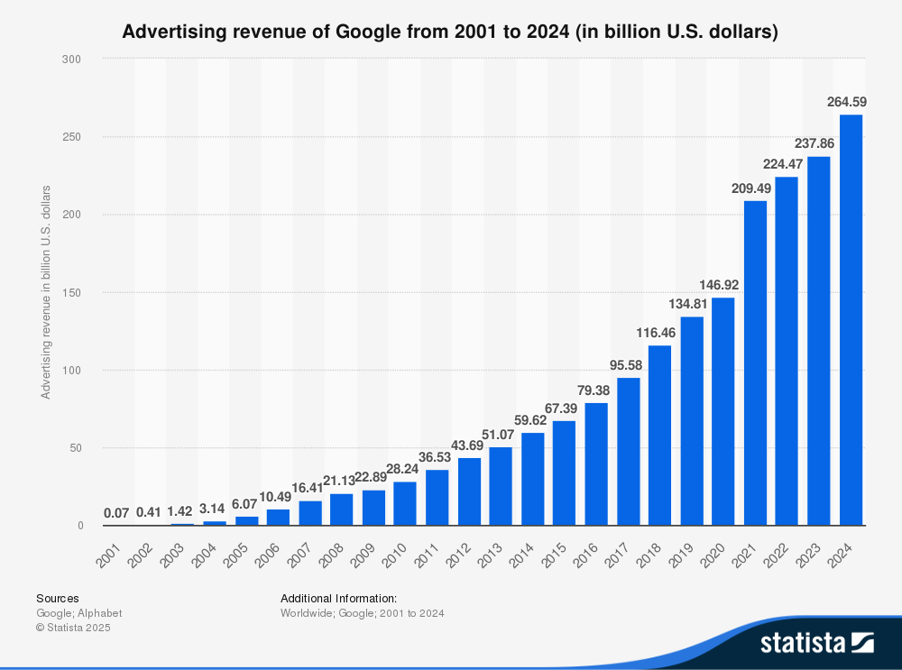
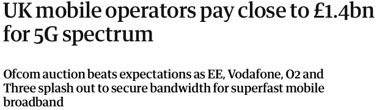
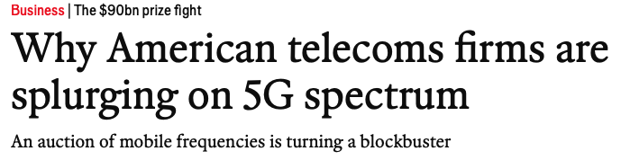
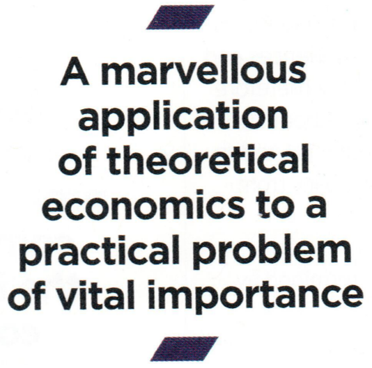
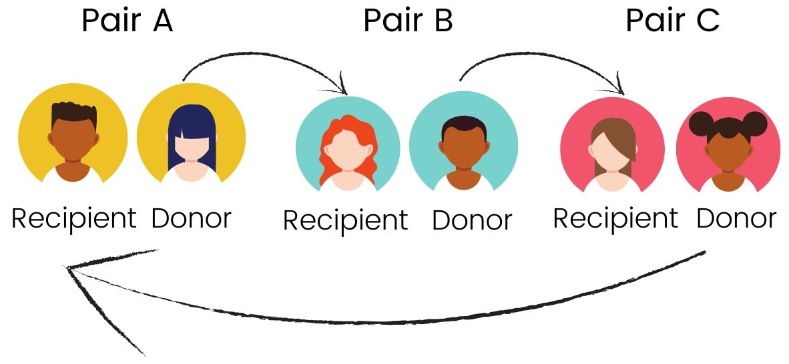
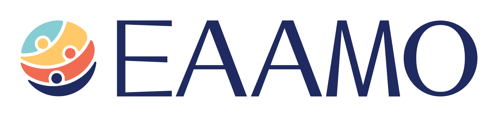
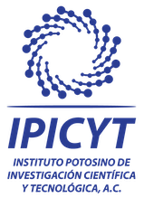
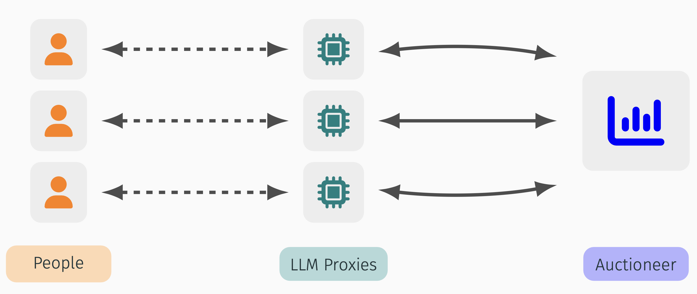
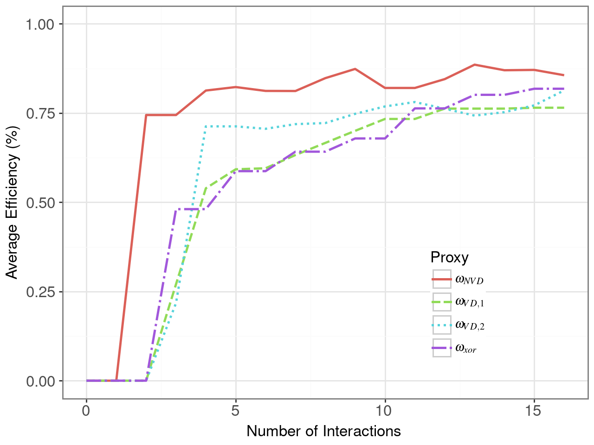

Oxford University | King’s College London
25 June 2025
\(\ \)
\(\ \)
Posted-price: “Announce a price and choose any sponsor willing to pay the price.”
First-price auction: “Invite all sponsors to submit a sealed bid. The highest bidder wins and pays their bid.”
Second-price auction: “Invite all sponsors to submit a sealed bid. The highest bidders wins and pays the second-highest bid.”
Revenue Equivalence Theorem: first- and second-price auctions raise same amount of money.
“The theory of mechanism design can be thought of as the engineering side of economic theory.”
— Eric Maskin
… and many more.
💰
💰 ❌



After 2007-8 financial crisis, the Bank of England needed a mechanism to provide liquidity to financial institutions.


Mechanism Design now equally at home in Economics and Computer Science.
Many problems are highly complex, and have many stakeholders.
\(\ \)


In many settings, we hit fundamental theoretical or computational limits.
Example: The Vickrey-Clarkes-Groves Auction
This auction is incentive-compatible!
Now the bad news…
Many proposals to stakeholders are rejected:
Practical mechanism design should prioritise:
AI can provide powerful tools to bridge theory and practice.
Each person has a value for each bundle of goods.
Each person has a value for each bundle of goods.
Exponentially many bundles per agent!
State-of-the-art auctions compute optimal outcomes by repeatedly making “mathematical” queries to the buyers:
⚠️ In the real world, asking these queries is cognitively & logistically costly or impossible.
Insight: We can use LLMs to communicate with buyers in natural language!
from [David Huang, Francisco Marmolejo-Cossío, EL, David Parkes, “Accelerated Preference Elicitation with LLM-Based Proxies”, 2025]

Experiments with \(6\) goods in three contexts.

Auction efficiency: LLM proxies can achieve higher welfare with less proxy–person communication.
Long-run performance: Our best proxy better approximates a person’s valuation than traditional mechanisms. The auction with LLM proxies converges to maximum welfare.
LLM-Proxy work provides blueprint for augmenting mechanism design with LLMs:
Thank you!
Get in touch: edwin.lock@cs.ox.ac.uk